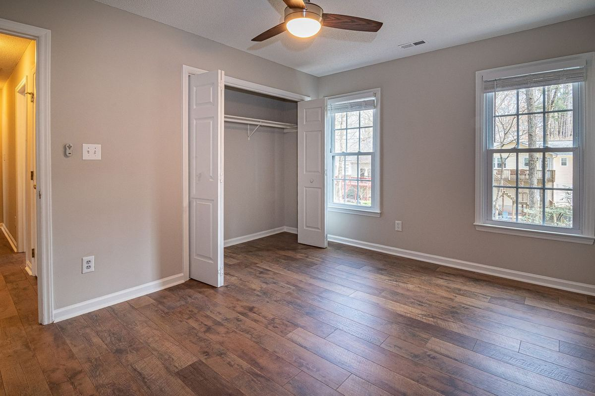

A rental property cleanout is one visit where a crew removes everything the tenant left behind, from furniture and mattresses down to the closet contents and the garage shelf. The unit ends up empty and swept so paint, carpet, and cleaning can start. Most single-family and single-unit turnovers are done in one trip.

Landlords and property managers call for a different reason than homeowners do. The problem is not clutter. The problem is that every day the unit sits full is a day it is not rented, and no other trade can start until the stuff is gone.
What tenants actually leave behind
After enough turnovers the list stops surprising anyone. In rough order of how often it shows up:
- Mattresses and box springs. Almost never taken, almost never wanted, and the item most cities will not put on a curbside pickup.
- Sofas, sectionals, and broken recliners. Anything heavy enough to be someone else's problem.
- Garage contents. Paint cans, half bags of concrete, bicycle frames, shelving, and the storage bins that never made it into the truck.
- Appliances. Washers, dryers, mini fridges, and the second refrigerator in the garage.
- Electronics. Televisions, monitors, and printers, which are their own disposal category.
- Patio and yard leftovers. Grills, planters, playsets, broken fence panels, and a pile of brush at the back gate.
- Trash bags and loose debris, usually in the room nobody wanted to deal with last.
What we cannot take is short and it matters on a turnover, because tenants leave exactly these things. Paint, solvents, motor oil, gasoline, pool chemicals, propane tanks, and anything containing asbestos are household hazardous waste. Those go to a city collection program, free for residents. Plano runs household chemical collection and McKinney runs a household hazardous waste program, and every city around them has an equivalent. The full breakdown is on what we will and will not take.
Why the city bulk pickup usually does not work for a turnover
Most of the northern suburbs run a bulky waste or brush collection service for residents, and it is genuinely useful. It is just built around a schedule rather than around your vacancy.
Plano publishes its bulky waste rules, and the pattern holds across the area. Pickup happens on set days, quantities are capped, and several categories are excluded outright, including mattresses in some programs, appliances with refrigerant, tires, and construction debris. Put the wrong pile at the curb and it stays at the curb.
For a rental that is a real cost. The pile sits in front of the property while you are trying to show it, an HOA may write it up, and the turnover clock keeps running. A one-visit haul is usually the cheaper move even before you count the vacancy days.
All of the above assumes a tenant who moved out on their own terms. A unit left full after an eviction or a walkaway is a different job with a legal step in front of it, and that one is covered in clearing a rental after an eviction or an abandonment.
Book the haul before the trades, not after. Paint, carpet, and cleaning crews all need an empty unit. Scheduling the cleanout first is the single easiest way to shorten a turnover, and it costs nothing to sequence it that way. If the property is commercial rather than residential, office and small commercial cleanouts covers the two things you have to handle before anyone loads a file cabinet.
How a turnover cleanout runs
You send photos or we walk it. For most units, photos from a phone are enough. For a property manager handling several doors, we would rather do a quick walkthrough and quote them together.
You get a number before anything is lifted. The crew looks at what the tenant left and quotes it firm, with no weight tickets and no hourly clock. Disposal is inside the number. The quote is the bill, and you approve it before the first item moves. How junk removal works walks through a job start to finish if you want the detail.
You do not need to be there the whole time. Plenty of managers meet the crew, unlock, approve the quote, and go. Lockbox access works too when you have arranged it in writing.
We clear, we sweep, we leave it ready. Nothing goes to the curb. The crew works room to room, out through the door, and sweeps the floor before leaving, because the next thing that happens in that unit is usually an inspection.
The load gets sorted. Usable furniture and appliances go to local donation partners, metal and cardboard go to recyclers, and the goal on every load is keeping more than half of it out of the landfill. TCEQ keeps a plain overview of recycling in Texas if you want to know where the streams go. If a tenant left something genuinely nice and you have the time, a Habitat for Humanity ReStore will often take it directly.
We keep the pricing fair and tied to the space you fill, and there is no upcharge for a job being unpleasant. For a free quote, tell us about the unit.
Multiple doors, garages, and the awkward jobs
Not every turnover is one apartment with a sofa in it.
Multi-unit turns. If you have three units emptying the same week, tell us up front. It is one visit planned properly instead of three visits planned badly.
Garages and storage rooms. A rental garage packed to the door is a normal job and often the biggest part of the load. Garage cleanouts covers how those run.
Units that got bad. Some turnovers involve a unit that was not lived in well. Our crews are our own people rather than gig labor hired off an app that morning, which is why we are willing to send them into a situation like that. If it is closer to a full accumulation situation, hoarder house junk removal is the more accurate page.
Abandoned storage. If the tenant also left a storage unit behind, storage unit junk removal covers the access and timing side of that.
One thing we will not do is give you a legal opinion. Rules about how long you must hold a former tenant's property before disposing of it are a question for your attorney, not for a hauling crew. We are haulers, and we will not pretend otherwise.
Timing a cleanout around the vacancy
We run pickups seven days a week. Call before noon and same afternoon is typical across Plano, Allen, Frisco, McKinney, Richardson, Little Elm, Prosper, The Colony, Wylie, and Fairview. After noon, the next morning's first slot is the usual worst case. Typical, not guaranteed, because access and job size are real variables. What actually decides whether today happens is broken down in same-day junk removal: what typical actually means.
The practical sequence for a fast turn is boring and it works. Walk the unit the day the keys come back. Book the haul for the next morning. Put the paint and carpet crews the day after that. If you have a deadline that is already tight, same day junk removal is the page to read, and furniture removal covers the heavy pieces on their own.
Frequently asked questions
Do you work with property managers on multiple units?
Yes. Tell us how many doors and roughly when each one frees up, and we will plan the visits together rather than treating each one as a separate call.
Do I have to be on site?
Someone needs to grant access and approve the quote before we start. After that you are welcome to leave. Lockbox access works when it is arranged in writing ahead of time.
Will you take the paint cans the tenant left in the garage?
No. Paint, solvents, and chemicals are household hazardous waste and go to your city's collection program, which is free for residents. We will point you at the right one.
Can you come the same day I call?
Often. Call before noon and same afternoon is typical across the northern suburbs. We say typical rather than guaranteed, because a promise like that gets broken eventually.
What happens to the tenant's stuff after you haul it?
Usable furniture and appliances go to local donation partners, metal and cardboard go to recyclers, and the rest is disposed of properly. We aim to keep more than half of every load out of the landfill.
If you have a unit sitting full right now, send a few photos and the address and we will tell you what the job looks like before you commit to a date.